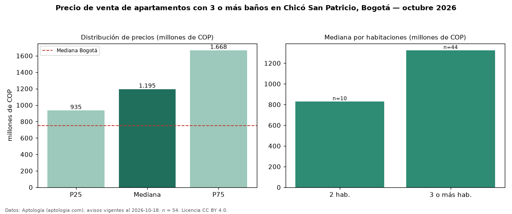

Precio de venta de apartamentos con 3 o más baños en Chicó San Patricio, Bogotá — octubre 2026
En Chicó San Patricio, Bogotá, la mediana de precio de venta de apartamentos con 3 o más baños es COP 1,20 mil millones, según 54 avisos vigentes. Eso es 9 % más que la mediana de todos los apartamentos en venta de Chicó San Patricio (COP 1,09 mil millones, n = 73); este segmento reúne el 74 % de esos avisos. Por metro cuadrado, la mediana es COP 7,69 millones/m² (n = 52), 8 % por debajo del conjunto de referencia (COP 8,35 millones/m²). El área mediana anunciada es 156 m². El segmento con más oferta es el de 3 o más habitaciones (44 avisos, mediana COP 1,32 mil millones); pasar de 2 habitaciones a 3 o más habitaciones cambia la mediana +60 %. La administración mediana declarada es COP 1,43 millones al mes (n = 51). El estrato más frecuente es 6 (96 % de los avisos con estrato). La mitad central de los avisos va de COP 935 millones a COP 1,67 mil millones (razón 1,8), una dispersión moderada. Datos: Aptología (aptologia.com), CC BY 4.0 — https://www.aptologia.com/venta/bogota/chico-san-patricio. Archivos: PDF, CSV con las cifras y gráfica PNG.

| Avisos únicos | 54 |
|---|---|
| Percentil 25 | COP 935.000.000 |
| Mediana | COP 1.195.000.000 |
| Percentil 75 | COP 1.667.500.000 |
| Mediana por m² | COP 7.690.476 |
Fuente: avisos vigentes de portales inmobiliarios recopilados por Aptología, deduplicados (mínimo 30 avisos únicos por celda). Precios pedidos, no cerrados. Fecha: 2026-10-18.